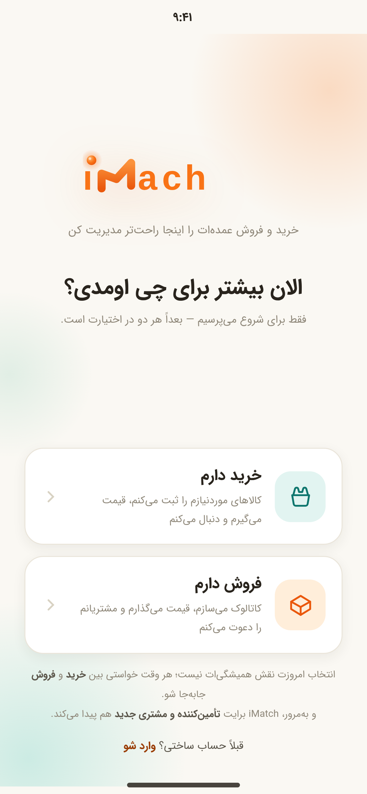
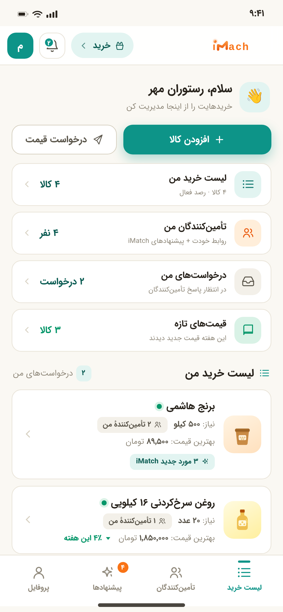
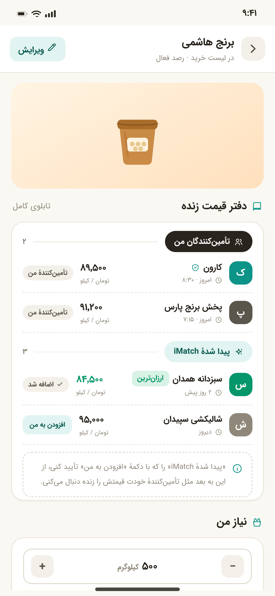
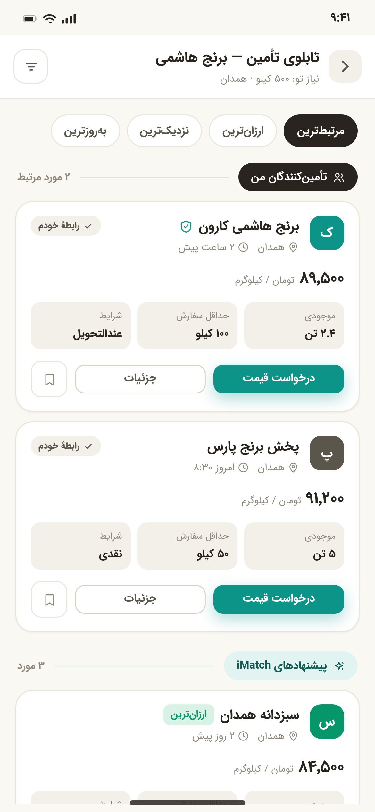
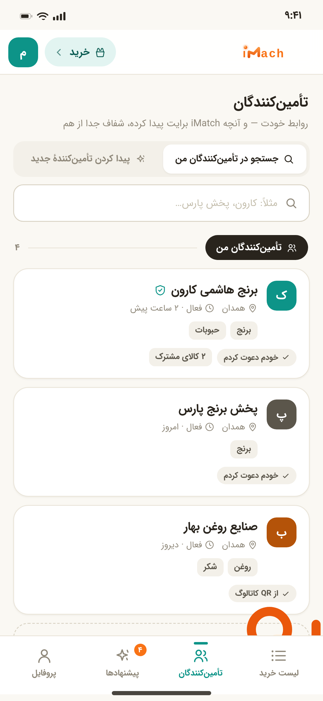
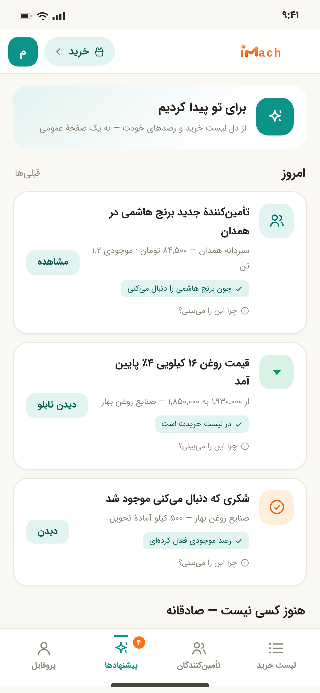
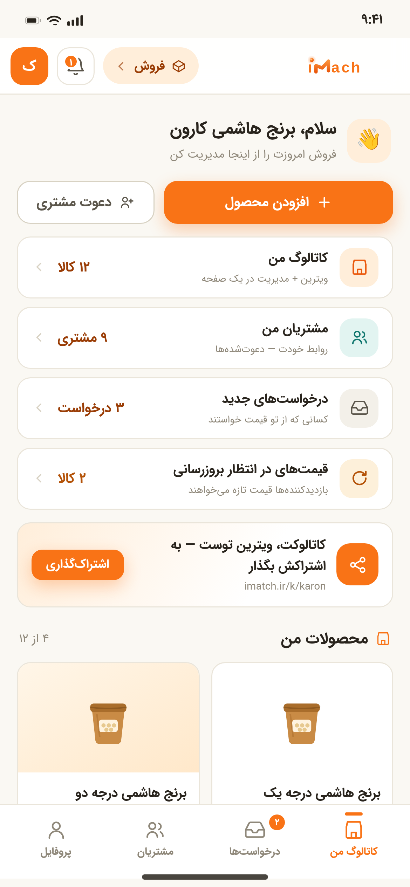
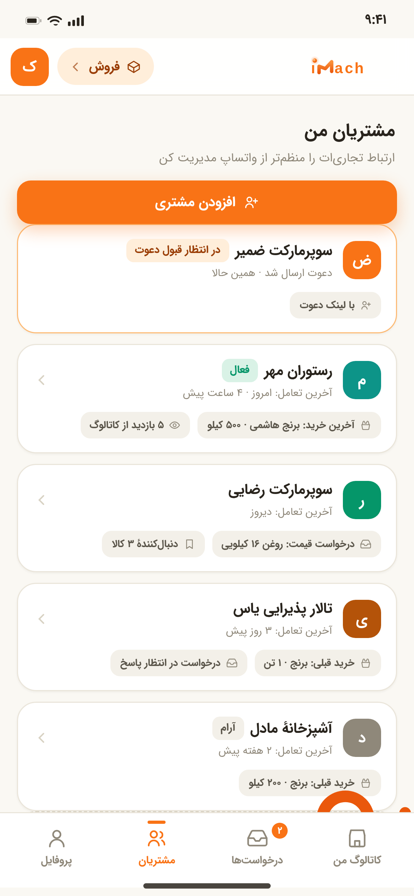
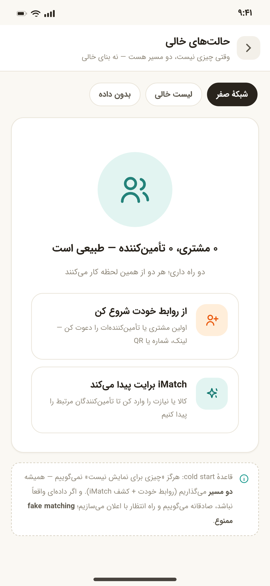

ریدیزاین ۳ — «ابزار روز اول، شبکهٔ تدریجی»
هیچ قابلیتی حذف یا تضعیف نشده؛ Matching و Supply Board و Discovery همچنان قلب محصولاند.
مدل ارزش سهلایه
روابط خود کاربر
کسانی که خودش میشناسد یا دعوت کرده — با لیبل روشن «تأمینکنندگان من» / «مشتریان من».
- دعوت با شماره / لینک / واتساپ / تلگرام / QR
- متن دعوت ساده و بیتشریف
- رابطه بدون نیاز به شناختن کل شبکه
ابزار عملیاتی iMatch
همان چیزی که روز اول ارزش میسازد، حتی با صفر ارتباط.
- خریدار: لیست خرید · دفتر قیمت زنده · رصد · RFQ
- فروشنده: کاتالوگ · قیمت · دعوت مشتری · پاسخ به درخواست
- قیمت تازه = عادت = دادهٔ واقعی
شبکه و کشف هوشمند
از دلِ فعالیت کاربر: «برای تو پیدا کردیم» — با برچسب iMatch، جدا از روابط شخصی.
- تأمینکننده/خریدار جدید مرتبط
- قیمت و فرصت بازار — هر کدام با دلیل
- بدون fake matching: داده نیست؟ صادقانه میگوییم
حلقهٔ ارزش (The Flywheel)
تحلیل نسخهٔ فعلی — چه چیزی با چه تصمیمی
| تصمیم | قلم | شرح |
|---|---|---|
| KEEP | آنبوردینگ تکسؤالی · سیستم رنگ/فونت · تببار خرید · کاتالوگ=ویترین+مدیریت ظریف · سه اکشن محصول · شیتهای دنبالکردن/اشتراک/سوییچ · فرم RFQ کوتاه · الگوی افزودن (یک الگو، دو context) · تابلو از دلِ کالا · نمایش ویژهٔ شفاف | ستونهای تجربی که در دمو و بازخورد کاربر جواب دادهاند — دست نخوردند. |
| MOVE | «شاید مناسب باشن» → بخش «برای تو پیدا کردیم» با لیبل مستقل · قیمتِ تکعددی کالا → دفتر قیمت چند-تأمینکننده · «درخواستهای من» → ردیف وضعیت خانهٔ عملیاتی | قابلیت حفظ شد؛ فقط context و جای نمایشش عوض شد تا «منشأ رابطه» شفاف شود. |
| PROGRESSIVE | پیشنهادها/کشف → بعد از اولین فعالیت (رصد/افزودن/RFQ) · لحظهٔ «برای تو پیدا کردیم» → ناجِ متنی با دلیل · فرصتهای بازار فروشنده → بعد از شکلگیری کاتالوگ · گزارش تقاضای بازار → آیندهٔ پولی، بدون مزاحمت | Surprise & Delight: کشف ارزش جدید، نه notification spam — هر پیشنهاد دلیل کوتاه دارد. |
| ENHANCE | خانهٔ خرید/فروش → خانهٔ عملیاتی (سلام 👋 + وضعیت + CTA) · صفحهٔ کالا → دفتر قیمت زنده با برچسب منشأ · تابلو → ۳ لایه + دلیل تطبیق · تأمینکنندگان → جستجوی دو-نیت + افزودن · حالت خالی → دو-مسیره · کپیرایتینگ → «مدیریت خرید و فروش عمده» | همان صفحه، عمق بیشتر — بدون افزودن تب یا شلوغی لایهٔ اول. |
| DO NOT REMOVE | Matching · Supply Board · Supplier Discovery · Buyer Discovery · Catalog · Shopping List · Price Following · RFQ · Sharing · نمایش ویژه (شفاف) · هر دو دستیار خرید/فروش | قلب iMatch — تحت هیچ شرایطی. |
ناوبری — مفهوم «من» پررنگتر شد
۴ تب
- لیست خرید — خانهٔ عملیاتی + دفتر قیمت زنده
- تأمینکنندگان — «من» + «برای تو پیدا کردیم»
- پیشنهادها — رفتارمحور با دلیل
- پروفایل
تابلوی تأمین همچنان از ناوبری بیرون است — از دلِ کالا باز میشود.
۴ تب
- کاتالوگ من — خانهٔ عملیاتی فروش
- درخواستها — «به من» + «فرصتهای بازار»
- مشتریان — جدید در ناوبری اصلی
- پروفایل
سوییچ دستیار همان pill کمرنگ هدر: خرید ▾
پنج سناریوی حیاتی — همه در دمو قابل اجرا
۱ فروشنده بدون شبکه
بدون هیچ connection دیگر کامل کار میکند — مسیر: خانهٔ فروش → شیت اشتراک → محصول دید مشتری → دنبال کردن.
۲ خریدار بدون marketplace
مسیر: خانهٔ خرید → «افزودن تأمینکننده» (در حالت خرید) → دفتر قیمت زنده.
۳ جادوی iMatch — لحظهٔ کشف
در دمو: دنبال کردن قیمت یا افزودن کالا → بعد از ~۲ ثانیه ناج میآید. یا دکمهٔ «لحظهٔ جادویی را نشانم بده» در پنل چپ.
۴ کشف خریدار برای فروشنده
مسیر: درخواستها → تب «فرصتهای بازار» — کارت خریداران جدید با لیبل iMatch.
۵ صداقت بدون داده — نه fake matching
عدد ساختگی «۶ تأمینکننده» هرگز ساخته نمیشود. مسیر: حالتهای خالی → تب «بدون داده».
گالری ۱۷ صفحه — با لینک زنده

۰۱ · آنبوردینگابزار-اول: «خرید و فروش عمدهات را اینجا مدیریت کن»
۰۲ · خانهٔ خریدسلام 👋 + وضعیت + لیست زنده
۰۳ · دفتر قیمت زندهچند تأمینکننده، برچسب منشأ
۰۴ · تابلوی تأمینمن · iMatch · نمایش ویژه + دلیل
۰۵ · تأمینکنندگان مندو-نیت جستجو + افزودن
۰۶ · پیشنهادهارفتارمحور + «چرا این را میبینی؟»
۰۸ · خانهٔ فروشکاتالوگ + مشتریان + قیمت معوق
۱۱ · مشتریان منتجاری، نه CRM + جریان دعوت
۱۶ · حالتهای خالیدو-مسیره + صداقت بدون دادهنگاشت قواعد کلیدی بریف به صفحات
| قاعدهٔ بریف | محل تحقق در دمو |
|---|---|
| ارزش روز اول بدون شبکه (§۱، §۶، §۴۲) | sc-buy-home / sc-sell-home — خانهٔ عملیاتی با سلام و وضعیت |
| سه لایهٔ ارزش (§۳، §۲۷) | مدل سهلایهٔ همین سند + sc-suppliers (تفکیک بصری) |
| تفکیک رابطهٔ شخصی / تطبیق هوشمند (§۴، §۵) | layer-mine / layer-im + بجهای src-mine / src-im در همهجا |
| دو مسیر cold start (§۶) | sc-empty → تب «شبکهٔ صفر» — دو path-card |
| نه CRM (§۲، §۱۰، §۲۸) | sc-customers — فقط خرید/درخواست/قیمت/تعامل تجاری |
| دعوت مشتری/تأمینکننده (§۱۱، §۱۴) | sheet-invite — شماره/لینک/واتساپ/تلگرام/QR + متن ساده |
| دفتر زندهٔ قیمت (§۱۵) | sc-buy-item — pb-row ها با قیمت و تازگی |
| تابلو: ۳ لایه + ترتیب (§۱۶، §۱۷) | sc-board — من → iMatch → نمایش ویژه |
| دلیل تطبیق بدون score (§۱۸) | why-match در کارتهای پیشنهادی تابلو |
| تطبیق قبل از شبکه (§۱۹، §۷) | ردیف «۳ مورد جدید iMatch» در لیست خرید، جدا از «تأمینکنندهٔ من» |
| Surprise & Delight بدون spam (§۲۰، §۲۱) | ناجِ nudge — بعد از فعالیت، با دلیل |
| پیشنهادهای دلیلدار (§۲۲) | sc-discover — «چون برنج هاشمی را دنبال میکنی» |
| نه CRM pipeline، نه marketplace-اول (§۲۵) | بازار عمومی در هیچ ناوبری نیست؛ فقط از context کالا |
| دو intent جستجو (§۲۶) | seg-search در sc-suppliers |
| نه ادعای ERP (§۳۰) | کپی: «خرید و فروش عمدهات را منظمتر و هوشمندتر مدیریت کن» |
| سناریوهای ۱–۴ بدون شبکه (§۳۱–۳۴) | بخش سناریوهای همین سند — همه قابل اجرا در دمو |
| Monetization بدون paywall تطبیق (§۳۵، §۳۶) | کارت «گزارش تقاضای بازار» در فرصتها — آیندهٔ پولی، شفاف |
| Paid ≠ Relevance (§۳۷) | نمایش ویژه: لایهٔ آخر + sponsor-note استقلال رتبه |
| Evolution نه destruction (§۴۰) | جدول KEEP/MOVE — توکنها و زبان بصری R2 دستنخورده |
| Simple surface, deep product (§۳۹) | ۱۷ صفحه؛ لایهٔ اول فقط خرید/فروش، لایهٔ ۲ فرمها |
هشت معیار موفقیت (§۴۳) — وضعیت در این طرح
مرز iMatch با CRM — رعایت شد
CRM میپرسد
«مشتری من کیست و در چه مرحلهٔ فروش است؟»
Pipeline، مرحله، task، campaign — چیزی که ما نمیسازیم.
iMatch میپرسد
«چه میفروشم؟ چه میخرم؟ چه کسی الان میتواند این را تأمین کند یا از من بخرد؟ با چه قیمتی و چه شرایطی؟»
محصول + قیمت + تأمین + تقاضا + تطبیق.
«ساده برای شروع، مستقل در ارزش، قدرتمند در عمق، هوشمند در کشف.»